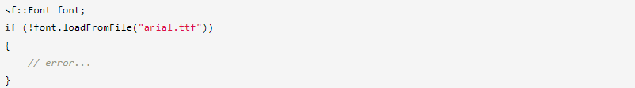
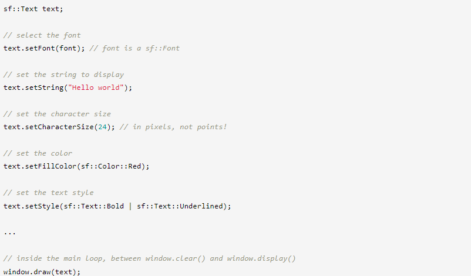
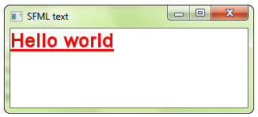
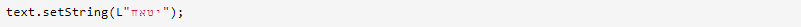
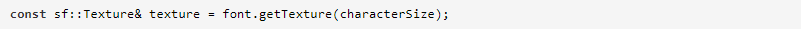
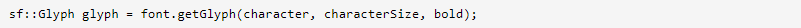
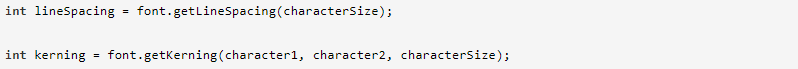

Прежде чем рисовать какой-либо текст, вам нужно иметь доступный шрифт, как и в любой другой программе, которая печатает текст. Шрифты инкапсулированы в класс sf::Font, который обеспечивает три основные функции: загрузку шрифта, получение от него глифов (то есть визуальных символов) и чтение его атрибутов. В типичной программе вам нужно будет использовать только первую функцию, загрузку шрифта, поэтому давайте сначала сосредоточимся на ней.
Самый распространенный способ загрузки шрифта — из файла на диске, который выполняется с помощью функции loadFromFile.
Обратите внимание, что SFML не будет автоматически загружать ваши системные шрифты, т. е. font.loadFromFile("Courier New") не будет работать. Во-первых, потому что SFML требует имен файлов, а не имен шрифтов, и, во-вторых, потому что SFML не имеет волшебного доступа к папке шрифтов вашей системы. Если вы хотите загрузить шрифт, вам нужно будет включить файл шрифта в ваше приложение, как и любой другой ресурс (изображения, звуки и т. д.).
Иногда функция loadFromFile может дать сбой без видимой причины. Сначала проверьте сообщение об ошибке, которое SFML выводит на стандартный вывод (проверьте консоль). Если в сообщении не удается открыть файл, убедитесь, что рабочий каталог (который является каталогом, относительно которого будет интерпретироваться любой путь к файлу) является тем, что вы думаете: когда вы запускаете приложение из среды рабочего стола, рабочий каталог это исполняемая папка. Однако, когда вы запускаете свою программу из IDE (Visual Studio, Code::Blocks,...), рабочий каталог иногда может быть установлен вместо каталога проекта. Обычно это можно легко изменить в настройках проекта.
Вы также можете загрузить файл шрифта из памяти (loadFromMemory) или из пользовательского потока ввода (loadFromStream).
SFML поддерживает большинство распространенных форматов шрифтов. Полный список доступен в документации по API.
Это все, что вам нужно сделать. Как только ваш шрифт загружен, вы можете начать рисовать текст.
Для рисования текста вы будете использовать класс sf::Text. Его очень просто использовать:
 Текст также можно трансформировать: у него есть положение, ориентация и масштаб. Задействованные функции такие же, как для класса sf::Sprite и других сущностей SFML. Они объясняются в учебнике по преобразованию объектов.
Правильная обработка символов, отличных от ASCII (таких как акцентированные европейские, арабские или китайские символы), может быть сложной задачей. Это требует хорошего понимания различных кодировок, используемых в процессе интерпретации и рисования вашего текста. Чтобы не возиться с этими кодировками, есть простое решение: использовать широкие литеральные строки.
Именно этот простой префикс «L» перед строкой заставляет его работать, сообщая компилятору о необходимости создания широкой строки. Широкие строки — странный зверь в C++: в стандарте ничего не сказано ни об их размере (16-разрядные? 32-разрядные?), ни о кодировке, которую они используют (UTF-16? UTF-32?). Однако мы знаем, что на большинстве платформ, если не на всех, они будут создавать строки Unicode, и SFML знает, как правильно их обрабатывать.
Обратите внимание, что стандарт C++11 поддерживает новые типы символов и префиксы для создания строковых литералов UTF-8, UTF-16 и UTF-32, но SFML пока их не поддерживает.
Это может показаться очевидным, но вы также должны убедиться, что используемый вами шрифт содержит символы, которые вы хотите нарисовать. Действительно, шрифты не содержат глифы для всех возможных символов (в стандарте Unicode их более 100 000!), а арабский шрифт, например, не сможет отображать японский текст.
Если sf::Text слишком ограничен или вы хотите сделать что-то еще с предварительно обработанными глифами, sf::Font предоставит все, что вам нужно. Вы можете получить текстуру, содержащую все предварительно обработанные глифы определенного размера:
Важно отметить, что глифы добавляются в текстуру по запросу. Символов так много (напомню, более 100 000), что все они не могут быть сгенерированы при загрузке шрифта. Вместо этого они отображаются на лету, когда вы вызываете функцию getGlyph (см. ниже).
Чтобы сделать что-то значимое с текстурой шрифта, вы должны получить текстурные координаты глифов, которые в нем содержатся:
символ — это код UTF-32 символа, глиф которого вы хотите получить. Вы также должны указать размер символа и хотите ли вы полужирную или обычную версию глифа.
Структура sf::Glyph содержит три члена:
Вы также можете получить некоторые другие показатели шрифта, такие как кернинг между двумя символами или межстрочный интервал (всегда для определенного размера символов):
